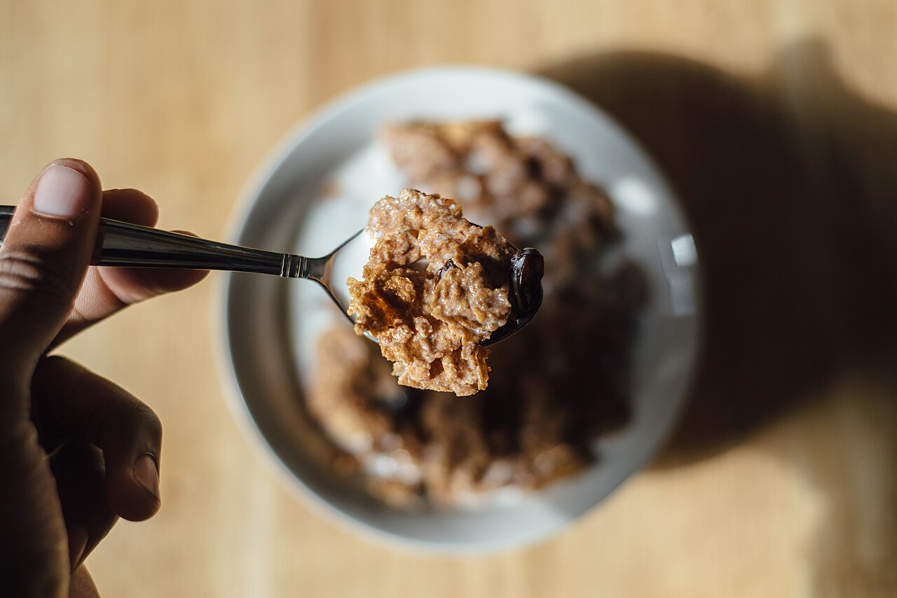
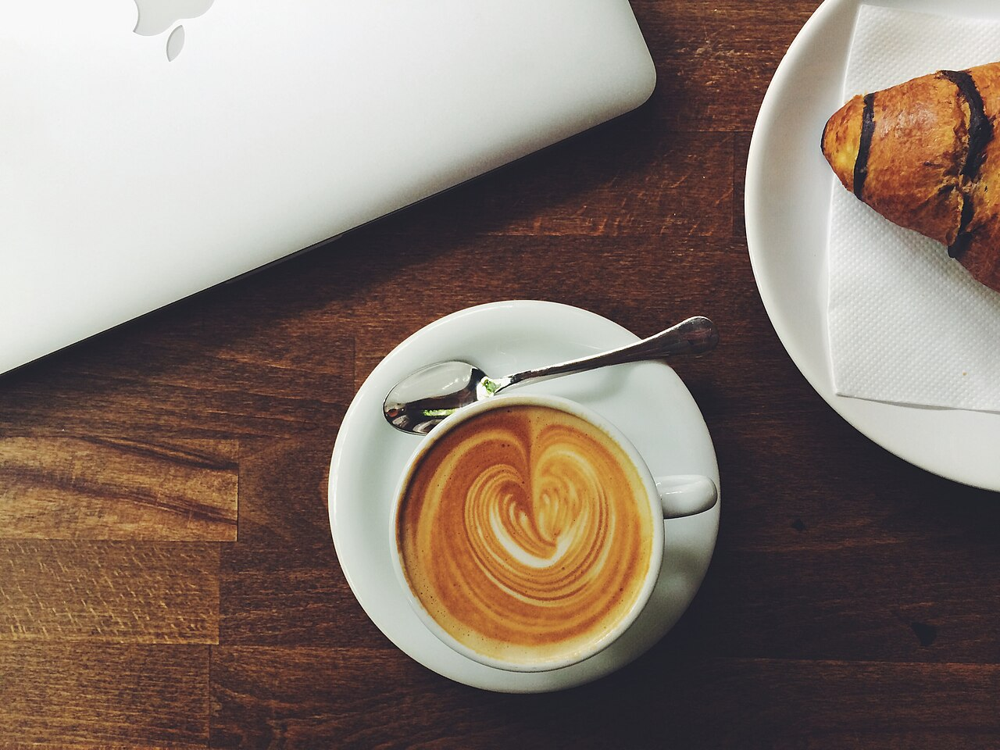
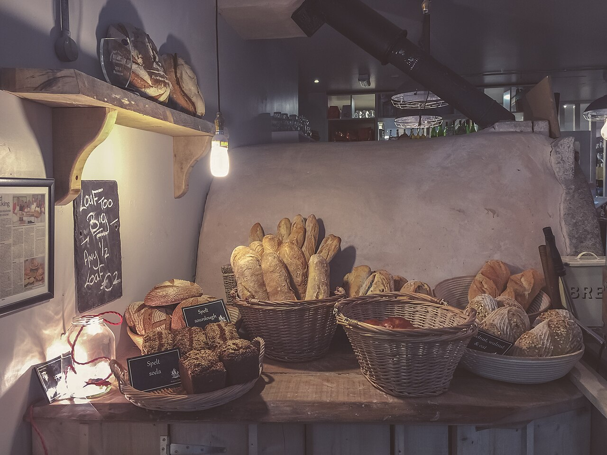
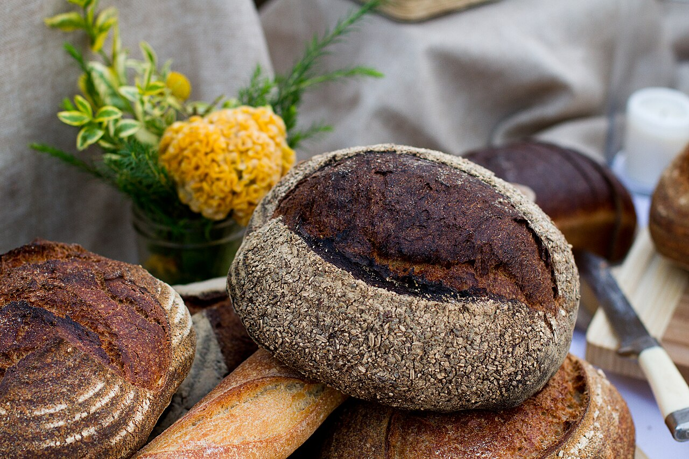
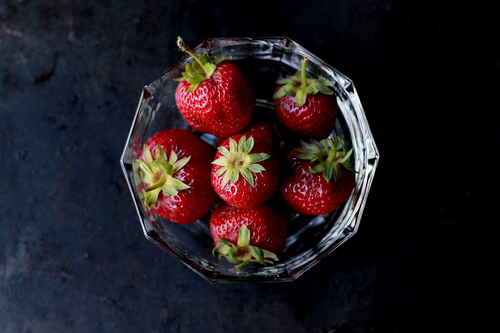
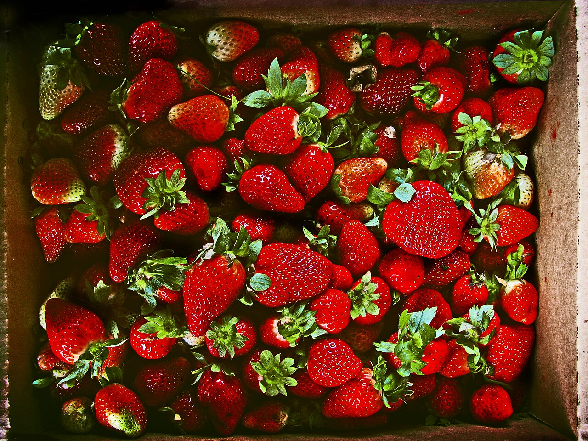
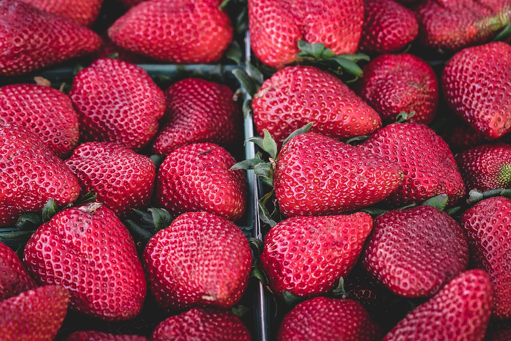
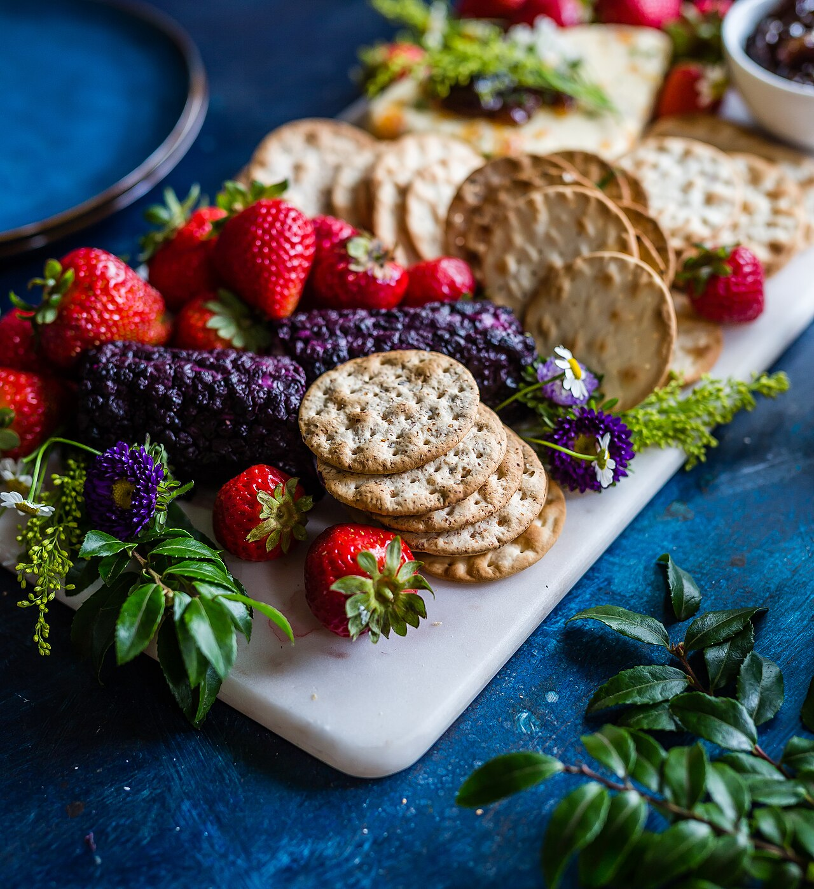
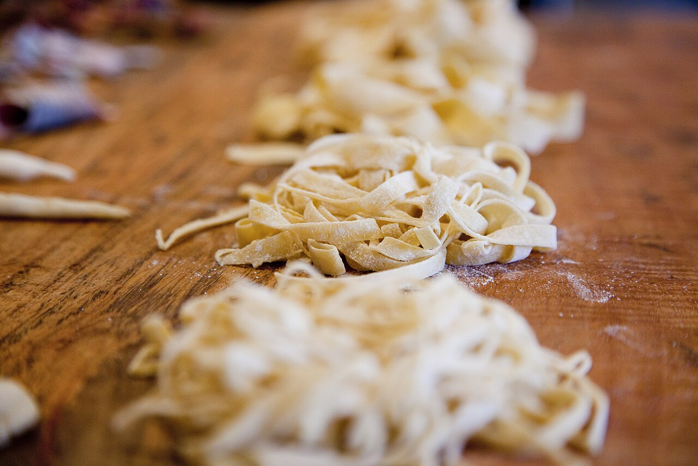
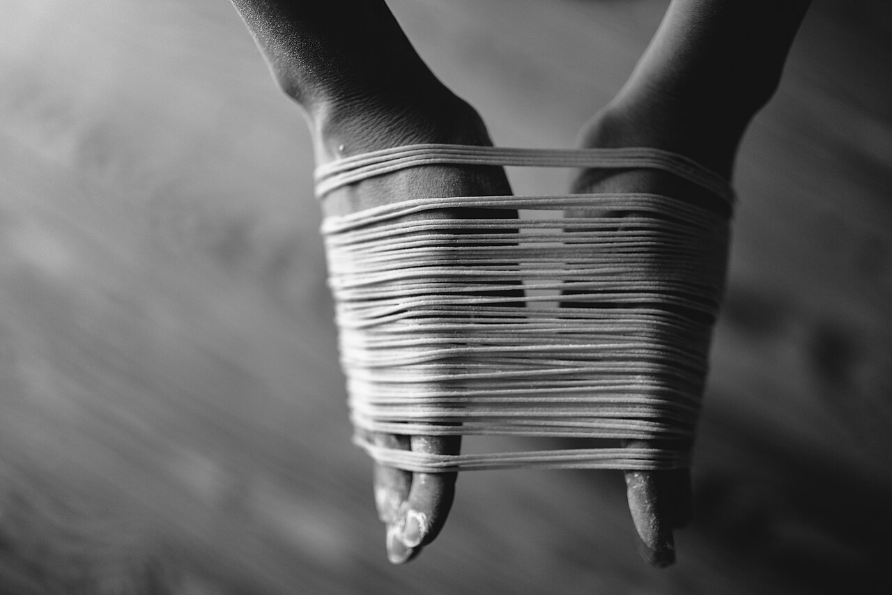

File:Cereal with Milk (Unsplash).jpg

File:Latte and croissant (Unsplash).jpg

File:Artisan Loaves of Bread (Unsplash).jpg

File:Bread (Unsplash).jpg

File:Bowl of Strawberries (Unsplash).jpg

File:Box of Strawberries (Unsplash).jpg

File:Collection of strawberry (Unsplash).jpg

File:Basket of Vegetables (Unsplash).jpg

File:Fresh Cheese Board (Unsplash).jpg

File:Handmade pasta noodles (Unsplash).jpg

File:Homemade fresh pasta (spaghetti) by Camille (Unsplash).jpg

File:Cooking Onions (Unsplash).jpg

File:Eat Your Vegetables (Unsplash).jpg

File:Fresh Ingredients (Unsplash).jpg

File:Tomato & Potato (Unsplash).jpg